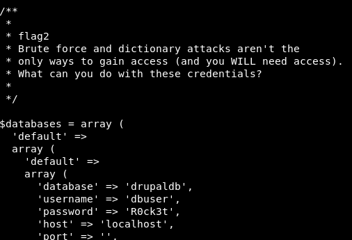
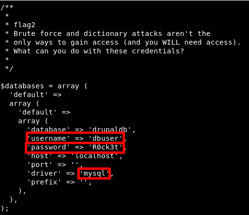

On your Kali Machine shell that is connected to the Victim Machine type:
$ cd/root $ ls $ cat thefinalflag.txt
Output:
b) Second flag.
We know there are several flags, so we're going to find for files with “flag” characters.
$ find/ -name flag*
Output: /var/www/flag1.txt
Let show the “flag1.txt” file.
$ cat/var/www/flag1.txt
Output: Every good CMS needs a config file - and so do you.
c) Third flag. In drupal, the config file located in “sites/default” directory with “settings.php” name.
$ cat/var/www/sites/default/settings.php
Output: 
So there's a Mysql Database.

c) Forth flag.
You could to login to the Mysql Database using the above credentials, then extract the data from users table and try to crack them using “hashcat” since it has an option to crack “drupal7” hashes. But if you do not have VGA which supports using its GPU for processing it will take more than 15 days to crack using “rockyou.txt” word-list). That way you could see the contents of the database.
If you look the “Contents” option you'll find the “flag3” content.